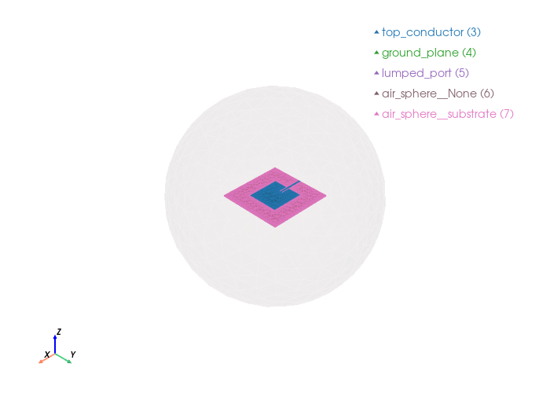

Patch Antenna#
We now apply a refined mesh for the patch antenna. Because the electromagnetic fields change rapidly near the metallic patch and the substrate edges, we increase the mesh density in these areas to ensure high simulation accuracy for resonance and radiation patterns.
import gmsh
import math
from palacetoolkit.plot_farfield import load_data, polar_plots, three_d_plot
from palacetoolkit.postpro import s_params, resonant_frequency
from palacetoolkit.simulation import generate_palace_config_from_entities
from palacetoolkit.viz import view_mesh
from palacetoolkit.mesh import (
Entity,
run_entity_pipeline,
generate_3d_mesh,
create_graded_mesh
)
Parameters:#
l : Patch length along x-axis, specified as a scalar in meters.
w : Patch width along y-axis, specified as a scalar in meters.
h : Patch height along z-axis, specified as a scalar in meters.
l1 : Ground plane length along x-axis, specified as a scalar in meters
w1 : Ground plane width along y-axis, specified as a scalar in meters
l2 : Notch length along x-axis, specified as a scalar in meters.
w2 : Notch width along x-axis, specified as a scalar in meters.
w3 : Strip line width along y-axis, specified as a scalar in meters.
airsphere_radius : Air sphere radius, specified as a scalar in meters.
freq : Simulation frequency in GHz, specified as a scalar.
filename : Output mesh filename, specified as a string.
eps_r: relative permittivity of the substrate
loss_tan: loss tangent of the substrate
port_impedance: characteristic impedance of the lumped port (Ohms)
# Patch
l: float = 0.030
w: float = 0.029
# Ground plane
l1: float = 0.06
w1: float = 0.06
# Notch
l2: float = 0.008
w2: float = 0.003
# Feed line
w3: float = 0.002
# Substrate
h: float = 0.0013
freq: float = 3.3
eps_r: float = 2.2
loss_tan: float = 0.0009
mu_r = 1.0
port_impedance: float = 50.0
wavelength = 3e8 / (freq * 1e9)
# Air sphere
airsphere_radius: float = wavelength
# Filename where the mesh is loadeds
filename = "patch_antenna.msh"
Initialize the model#
gmsh.initialize()
gmsh.model.add("patch_antenna")
kernel = gmsh.model.occ
Geometry Construction#
In this step, we build the physical structure of the patch antenna. We define the substrate, the metallic ground plane, and the antenna patch itself.
Patch Design: We combine the main patch and the feed line, including an inset to help with impedance matching. Excitation: A lumped port is created and positioned to feed the antenna. Domain Setup: We enclose the entire structure in an “air sphere,” which defines the simulation region (the radiation space). Finalizing: We use boolean operations (fragmenting) to ensure all components are properly connected and recognized as a single cohesive model by the solver.
substrate = kernel.addBox(-l1/2, -w1/2, 0, l1, w1, h)
# Ground plane
ground_plane = kernel.addRectangle(-l1/2, -w1/2, 0, l1, w1)
# Patch definition
main_patch = kernel.addRectangle(-l/2, -w/2, h, l, w)
inset = kernel.addRectangle(-l/2, -w2/2, h, l2, w2)
patch_dimtags, _ = kernel.cut(
[(2, main_patch)],
[(2, inset)],
removeObject=True, removeTool=True
)
kernel.synchronize()
feed_length = (l1 - l)/2 + l2
feed_line = kernel.addRectangle(-l1/2, -w3/2, h, feed_length, w3)
# Our patch
top_conductor, _ = kernel.fuse(
patch_dimtags, [(2, feed_line)],
removeObject=True, removeTool=True
)
kernel.synchronize()
# Gap bewteen the gropund plane and the bottom of the lumped port.
lumped_port = kernel.addRectangle(-l1/2, -w3/2, 0, h, w3)
kernel.rotate([(2, lumped_port)], -l1/2, 0, 0, 0, 1, 0, -math.pi/2)
kernel.synchronize()
def create_air_sphere(airsphere_radius: float) -> int:
return kernel.addSphere(0.0, 0.0, 0.0, airsphere_radius)
air_sphere = create_air_sphere(airsphere_radius)
kernel.synchronize()
Info : [ 0%] Difference
Info : [ 10%] Difference
Info : [ 20%] Difference
Info : [ 30%] Difference
Info : [ 40%] Difference
Info : [ 50%] Difference
Info : [ 60%] Difference
Info : [ 70%] Difference
Info : [ 80%] Difference - Making faces
Info : [ 90%] Difference
Info : [ 0%] Union
Info : [ 10%] Union
Info : [ 20%] Union
Info : [ 30%] Union
Info : [ 40%] Union
Info : [ 50%] Union
Info : [ 70%] Union
Info : [ 80%] Union - Splitting faces
Info : Cannot bind existing OpenCASCADE surface 8 to second tag 9
Info : Could not preserve tag of 2D object 9 (->8)
Entities definition and mesh refinement.#
# Define the entities which later will become the physical groups.
entities = [
Entity("air_sphere", dim = 3, mesh_order = 2, btype = "dielectric", tags = [air_sphere], loss_tan = 0.0, eps_r = 1.0, mu_r = 1.0),
Entity("substrate", dim = 3, mesh_order = 1, btype = "dielectric", tags = [substrate], loss_tan = loss_tan, eps_r = eps_r, mu_r = mu_r),
Entity("top_conductor", dim = 2, mesh_order= 1, btype = "pec", tags = [top_conductor[0][1]]),
Entity("ground_plane", dim = 2, mesh_order = 1, btype = "pec", tags = [ground_plane]),
Entity("lumped_port", dim = 2, mesh_order = 0, btype = "lumped_port", tags = [lumped_port], R = port_impedance, direction = '+Z', excitation = True)
]
# Boolean operations to guarantee a nice mesh, algo it returns the
# physical group map.
pg_map = run_entity_pipeline(entities)
# Refine near the top conductor and locally the lumped port
create_graded_mesh( wavelength,
ppw_near=100,
ppw_far=5,
transition_distance=wavelength/4,
set_as_background=True)
generate_3d_mesh(entities, output_file=filename, optimize=True)
gmsh.option.setNumber("Mesh.MshFileVersion", 2.2)
gmsh.write(filename)
gmsh.finalize()
Physical group 'air_sphere' (dim=3): pg=1, tags=[2]
Physical group 'substrate' (dim=3): pg=2, tags=[1]
Physical group 'top_conductor' (dim=2): pg=3, tags=[8]
Physical group 'ground_plane' (dim=2): pg=4, tags=[7]
Physical group 'lumped_port' (dim=2): pg=5, tags=[9]
Physical group 'air_sphere__None' (dim=2): pg=6, tags=[16]
Physical group 'air_sphere__substrate' (dim=2): pg=7, tags=[10, 11, 13, 15, 14, 12]
ignoring 3 curves from {'air_sphere__None'}
global: 29 curves, SizeMin=0.0009
ppw_near=100 ppw_far=5
SizeMax=0.0182 transition=0.0227
Mesh saved to patch_antenna.msh
Nodes: 4182
Elements: 28081
Info : Writing 'patch_antenna.msh'...
Info : Done writing 'patch_antenna.msh'
Mesh visualization#
view_mesh(filename, transparent_groups= "air_sphere__None")
Loading mesh file: patch_antenna.msh
Groups to render transparent: air_sphere__None
Mesh loaded successfully with 2 cell blocks
Found 4820 triangles total
Physical group tags in mesh: {3: 'top_conductor', 4: 'ground_plane', 5: 'lumped_port', 6: 'air_sphere__None', 7: 'air_sphere__substrate'}

Simulation Configuration#
We define the key parameters for the electromagnetic simulation here. These settings control the frequency sweep range, material properties (dielectric constant and loss tangent for the substrate), and solver-specific configurations like port impedance and mesh order.
output_file : output filename for the configuration JSON file
freq_min : minimum frequency for the simulation (GHz)
freq_max: maximum frequency for the simulation (GHz)
freq_step: frequency step for the simulation (GHz)
solver_order: order of the finite element basis functions for the simulation (e.g., 1 for linear, 2 for quadratic)
output_file: str = "patch_antenna.json"
# Sweep de simulación
freq_min: float = 2.5
freq_max: float = 4
freq_step: float = 0.025
solver_order: int = 2
Generating the Palace Configuration File#
Finally, we assemble the simulation parameters into a JSON configuration .
generate_palace_config_from_entities(entity_defs = [e.to_dict() for e in entities],
pg_map = pg_map,
mesh_file = filename,
output_file = 'patch.config',
freq_min = freq_min,
freq_max = freq_max,
freq_step = freq_step ,
L0 = 1.0,
solver_order = solver_order,
absorbing_order = 2,
farfield=True)
Palace config written to patch.config
{'Problem': {'Type': 'Driven', 'Verbose': 2, 'Output': 'postpro/patch'},
'Model': {'Mesh': 'patch_antenna.msh', 'L0': 1.0, 'Refinement': {}},
'Domains': {'Materials': [{'Attributes': [1],
'Permeability': 1.0,
'Permittivity': 1.0,
'LossTan': 0.0},
{'Attributes': [2],
'Permeability': 1.0,
'Permittivity': 2.2,
'LossTan': 0.0009}]},
'Boundaries': {'PEC': {'Attributes': [3, 4]},
'Absorbing': {'Attributes': [6], 'Order': 2},
'LumpedPort': [{'Index': 1,
'Attributes': [5],
'R': 50.0,
'Excitation': True,
'Direction': '+Z'}],
'Postprocessing': {'FarField': {'Attributes': [6], 'NSample': 16000}}},
'Solver': {'Order': 2,
'Device': 'CPU',
'Driven': {'MinFreq': 2.5,
'MaxFreq': 4,
'FreqStep': 0.025,
'SaveStep': 5,
'AdaptiveTol': 0.001},
'Linear': {'Type': 'Default',
'KSPType': 'GMRES',
'Tol': 1e-08,
'MaxIts': 500}}}
Running Palace#
from palacetoolkit.simulation import set_palace_path, run_palace
run_palace(config_file="patch.config", num_procs=16)
Running: /home/martin/.cache/palacetoolkit/runtime/palace-cpu-v0.17.0/bin/palace --serial /tmp/palacetoolkit-docs.dabfYK/docs/examples/patch.config
>> /home/martin/.cache/palacetoolkit/runtime/palace-cpu-v0.17.0/bin/palace-x86_64.bin /tmp/palacetoolkit-docs.dabfYK/docs/examples/patch.config
_____________ _______
_____ __ \____ __ /____ ____________
____ /_/ / __ ` / / __ ` / ___/ _ \
___ _____/ /_/ / / /_/ / /__/ ___/
/__/ \___,__/__/\___,__/\_____\_____/
--> Warning!
Output folder is not empty; program will overwrite content! (postpro/patch)
Git changeset ID: v0.17.0-194-g01f5d9bd1
Running with 1 MPI process, 1 OpenMP thread
Device configuration: omp,cpu
Memory configuration: host-std
libCEED backend: /cpu/self/xsmm/blocked
Added 690 duplicate vertices for interior boundaries in the mesh
Added 1841 duplicate boundary elements for interior boundaries in the mesh
Characteristic length and time scales:
Lc = 1.818e-01 m, tc = 6.065e-01 ns
Finished partitioning mesh into 1 subdomain
Mesh curvature order: 1
Mesh bounding box:
(Xmin, Ymin, Zmin) = (-9.062e-02, -9.058e-02, -9.091e-02) m
(Xmax, Ymax, Zmax) = (+9.091e-02, +9.067e-02, +9.091e-02) m
Parallel Mesh Stats:
minimum average maximum total
vertices 4872 4872 4872 4872
edges 29612 29612 29612 29612
faces 47228 47228 47228 47228
elements 22485 22485 22485 22485
neighbors 0 0 0
minimum maximum
h 0.00315789 0.159248
kappa 1.08146 6.70855
Estimated current per-rank memory usage is: Min. 69.1M, Max. 69.1M, Avg. 69.1M, Total 69.1M
Estimated current per-node memory usage is: Min. 69.1M, Max. 69.1M, Avg. 69.1M, Total 69.1M
Configuring Robin absorbing BC (order 2) at attributes:
6
Configuring Robin impedance BC for lumped ports at attributes:
5: Rs = 7.692e+01 Ω/sq, n = (-1.0,+0.0,+0.0)
Configuring lumped port circuit properties:
Index = 1: R = 5.000e+01 Ω
Configuring lumped port excitation source term at attributes:
5: Index = 1
Configuring Dirichlet PEC BC at attributes:
3-4
Computing adaptive fast frequency response for:
Excitation with index 1 has contributions from:
Lumped port 1
Beginning PROM construction offline phase:
61 points for frequency sweep over [2.500e+00, 4.000e+00] GHz
Assembling system matrices, number of global unknowns:
H1 (p = 2): 34484, ND (p = 2): 153680, RT (p = 2): 209139
Operator assembly level: Partial
Mesh geometries:
Tetrahedron: P = 20, Q = 14 (quadrature order = 4)
Assembling multigrid hierarchy:
Level 0 (p = 1): 29612 unknowns
Level 1 (p = 2): 153680 unknowns
Level 0 (auxiliary) (p = 1): 4872 unknowns
Level 1 (auxiliary) (p = 2): 34484 unknowns
Residual norms for GMRES solve
0 (restart 0) KSP residual norm 2.640113e+01
1 (restart 0) KSP residual norm 2.552256e+01
2 (restart 0) KSP residual norm 1.394103e+01
3 (restart 0) KSP residual norm 8.611459e+00
4 (restart 0) KSP residual norm 3.437554e+00
5 (restart 0) KSP residual norm 3.415425e+00
6 (restart 0) KSP residual norm 2.972792e+00
7 (restart 0) KSP residual norm 2.853749e+00
8 (restart 0) KSP residual norm 2.691803e+00
9 (restart 0) KSP residual norm 2.459507e+00
10 (restart 0) KSP residual norm 2.389375e+00
11 (restart 0) KSP residual norm 1.857330e+00
12 (restart 0) KSP residual norm 1.811298e+00
13 (restart 0) KSP residual norm 1.229288e+00
14 (restart 0) KSP residual norm 1.165863e+00
15 (restart 0) KSP residual norm 7.976876e-01
16 (restart 0) KSP residual norm 7.912307e-01
17 (restart 0) KSP residual norm 6.247509e-01
18 (restart 0) KSP residual norm 5.869214e-01
19 (restart 0) KSP residual norm 4.909592e-01
20 (restart 0) KSP residual norm 4.710003e-01
21 (restart 0) KSP residual norm 4.035170e-01
22 (restart 0) KSP residual norm 3.766986e-01
23 (restart 0) KSP residual norm 3.288739e-01
24 (restart 0) KSP residual norm 2.996747e-01
25 (restart 0) KSP residual norm 2.696730e-01
26 (restart 0) KSP residual norm 2.473741e-01
27 (restart 0) KSP residual norm 2.233217e-01
28 (restart 0) KSP residual norm 2.083126e-01
29 (restart 0) KSP residual norm 1.866604e-01
30 (restart 0) KSP residual norm 1.726148e-01
31 (restart 0) KSP residual norm 1.472117e-01
32 (restart 0) KSP residual norm 1.401603e-01
33 (restart 0) KSP residual norm 1.178438e-01
34 (restart 0) KSP residual norm 1.071676e-01
35 (restart 0) KSP residual norm 9.013875e-02
36 (restart 0) KSP residual norm 8.353104e-02
37 (restart 0) KSP residual norm 7.440499e-02
38 (restart 0) KSP residual norm 6.513944e-02
39 (restart 0) KSP residual norm 5.839352e-02
40 (restart 0) KSP residual norm 5.294128e-02
41 (restart 0) KSP residual norm 4.444288e-02
42 (restart 0) KSP residual norm 3.922720e-02
43 (restart 0) KSP residual norm 3.256888e-02
44 (restart 0) KSP residual norm 2.739836e-02
45 (restart 0) KSP residual norm 2.164182e-02
46 (restart 0) KSP residual norm 1.807274e-02
47 (restart 0) KSP residual norm 1.400991e-02
48 (restart 0) KSP residual norm 1.071847e-02
49 (restart 0) KSP residual norm 8.385471e-03
50 (restart 0) KSP residual norm 6.131163e-03
51 (restart 0) KSP residual norm 4.129236e-03
52 (restart 0) KSP residual norm 3.290661e-03
53 (restart 0) KSP residual norm 2.421312e-03
54 (restart 0) KSP residual norm 1.895515e-03
55 (restart 0) KSP residual norm 1.561985e-03
56 (restart 0) KSP residual norm 1.201750e-03
57 (restart 0) KSP residual norm 9.342645e-04
58 (restart 0) KSP residual norm 7.375935e-04
59 (restart 0) KSP residual norm 5.530240e-04
60 (restart 0) KSP residual norm 3.730649e-04
61 (restart 0) KSP residual norm 3.032010e-04
62 (restart 0) KSP residual norm 2.243828e-04
63 (restart 0) KSP residual norm 1.775126e-04
64 (restart 0) KSP residual norm 1.252238e-04
65 (restart 0) KSP residual norm 9.413436e-05
66 (restart 0) KSP residual norm 7.214729e-05
67 (restart 0) KSP residual norm 5.279425e-05
68 (restart 0) KSP residual norm 3.693568e-05
69 (restart 0) KSP residual norm 3.043252e-05
70 (restart 0) KSP residual norm 2.261802e-05
71 (restart 0) KSP residual norm 1.411039e-05
72 (restart 0) KSP residual norm 1.015409e-05
73 (restart 0) KSP residual norm 6.640887e-06
74 (restart 0) KSP residual norm 4.880397e-06
75 (restart 0) KSP residual norm 3.522653e-06
76 (restart 0) KSP residual norm 2.186194e-06
77 (restart 0) KSP residual norm 1.099351e-06
78 (restart 0) KSP residual norm 8.338666e-07
79 (restart 0) KSP residual norm 6.088094e-07
80 (restart 0) KSP residual norm 4.098643e-07
81 (restart 0) KSP residual norm 2.958601e-07
82 (restart 0) KSP residual norm 1.669344e-07
GMRES solver converged in 82 iterations (avg. reduction factor: 7.943e-01)
Field energy E (1.012e-10 J) + H (9.184e-11 J) = 1.931e-10 J
Residual norms for GMRES solve
0 (restart 0) KSP residual norm 2.060895e+02
1 (restart 0) KSP residual norm 5.393533e+01
2 (restart 0) KSP residual norm 3.802862e+01
3 (restart 0) KSP residual norm 3.121788e+01
4 (restart 0) KSP residual norm 2.723054e+01
5 (restart 0) KSP residual norm 1.357647e+01
6 (restart 0) KSP residual norm 1.047653e+01
7 (restart 0) KSP residual norm 8.962053e+00
8 (restart 0) KSP residual norm 5.867163e+00
9 (restart 0) KSP residual norm 5.545283e+00
10 (restart 0) KSP residual norm 4.638533e+00
11 (restart 0) KSP residual norm 4.565477e+00
12 (restart 0) KSP residual norm 3.712868e+00
13 (restart 0) KSP residual norm 3.497675e+00
14 (restart 0) KSP residual norm 2.933826e+00
15 (restart 0) KSP residual norm 2.696966e+00
16 (restart 0) KSP residual norm 2.477244e+00
17 (restart 0) KSP residual norm 2.208667e+00
18 (restart 0) KSP residual norm 1.890842e+00
19 (restart 0) KSP residual norm 1.777567e+00
20 (restart 0) KSP residual norm 1.529770e+00
21 (restart 0) KSP residual norm 1.454350e+00
22 (restart 0) KSP residual norm 1.225584e+00
23 (restart 0) KSP residual norm 1.067238e+00
24 (restart 0) KSP residual norm 9.212676e-01
25 (restart 0) KSP residual norm 8.289032e-01
26 (restart 0) KSP residual norm 7.701966e-01
27 (restart 0) KSP residual norm 6.942523e-01
28 (restart 0) KSP residual norm 5.946997e-01
29 (restart 0) KSP residual norm 5.230996e-01
30 (restart 0) KSP residual norm 4.154451e-01
31 (restart 0) KSP residual norm 3.652752e-01
32 (restart 0) KSP residual norm 3.505431e-01
33 (restart 0) KSP residual norm 2.626928e-01
34 (restart 0) KSP residual norm 2.045052e-01
35 (restart 0) KSP residual norm 1.828627e-01
36 (restart 0) KSP residual norm 1.752345e-01
37 (restart 0) KSP residual norm 1.430193e-01
38 (restart 0) KSP residual norm 1.095318e-01
39 (restart 0) KSP residual norm 9.104444e-02
40 (restart 0) KSP residual norm 8.261895e-02
41 (restart 0) KSP residual norm 7.509075e-02
42 (restart 0) KSP residual norm 6.433328e-02
43 (restart 0) KSP residual norm 5.543202e-02
44 (restart 0) KSP residual norm 4.424745e-02
45 (restart 0) KSP residual norm 3.408346e-02
46 (restart 0) KSP residual norm 2.792160e-02
47 (restart 0) KSP residual norm 2.297629e-02
48 (restart 0) KSP residual norm 1.890695e-02
49 (restart 0) KSP residual norm 1.392778e-02
50 (restart 0) KSP residual norm 1.028497e-02
51 (restart 0) KSP residual norm 8.826966e-03
52 (restart 0) KSP residual norm 6.833310e-03
53 (restart 0) KSP residual norm 5.507920e-03
54 (restart 0) KSP residual norm 4.622911e-03
55 (restart 0) KSP residual norm 3.482766e-03
56 (restart 0) KSP residual norm 2.675910e-03
57 (restart 0) KSP residual norm 2.190034e-03
58 (restart 0) KSP residual norm 1.825591e-03
59 (restart 0) KSP residual norm 1.488771e-03
60 (restart 0) KSP residual norm 1.194439e-03
61 (restart 0) KSP residual norm 9.810481e-04
62 (restart 0) KSP residual norm 7.350682e-04
63 (restart 0) KSP residual norm 5.755245e-04
64 (restart 0) KSP residual norm 4.617302e-04
65 (restart 0) KSP residual norm 3.588719e-04
66 (restart 0) KSP residual norm 2.807057e-04
67 (restart 0) KSP residual norm 2.083262e-04
68 (restart 0) KSP residual norm 1.481422e-04
69 (restart 0) KSP residual norm 1.101922e-04
70 (restart 0) KSP residual norm 8.792631e-05
71 (restart 0) KSP residual norm 6.564093e-05
72 (restart 0) KSP residual norm 4.873430e-05
73 (restart 0) KSP residual norm 3.797408e-05
74 (restart 0) KSP residual norm 2.754175e-05
75 (restart 0) KSP residual norm 1.877101e-05
76 (restart 0) KSP residual norm 1.446266e-05
77 (restart 0) KSP residual norm 1.078818e-05
78 (restart 0) KSP residual norm 7.662860e-06
79 (restart 0) KSP residual norm 5.534574e-06
80 (restart 0) KSP residual norm 4.176182e-06
81 (restart 0) KSP residual norm 3.237887e-06
82 (restart 0) KSP residual norm 2.566570e-06
83 (restart 0) KSP residual norm 1.908040e-06
GMRES solver converged in 83 iterations (avg. reduction factor: 8.002e-01)
Field energy E (1.794e-10 J) + H (1.405e-10 J) = 3.199e-10 J
Residual norms for GMRES solve
0 (restart 0) KSP residual norm 4.538612e+01
1 (restart 0) KSP residual norm 4.506347e+01
2 (restart 0) KSP residual norm 2.671597e+01
3 (restart 0) KSP residual norm 1.574797e+01
4 (restart 0) KSP residual norm 1.510900e+01
5 (restart 0) KSP residual norm 1.323987e+01
6 (restart 0) KSP residual norm 1.225878e+01
7 (restart 0) KSP residual norm 1.105133e+01
8 (restart 0) KSP residual norm 1.024356e+01
9 (restart 0) KSP residual norm 9.849463e+00
10 (restart 0) KSP residual norm 7.820932e+00
11 (restart 0) KSP residual norm 7.137183e+00
12 (restart 0) KSP residual norm 5.903086e+00
13 (restart 0) KSP residual norm 5.546170e+00
14 (restart 0) KSP residual norm 5.274216e+00
15 (restart 0) KSP residual norm 5.123588e+00
16 (restart 0) KSP residual norm 4.809396e+00
17 (restart 0) KSP residual norm 4.494900e+00
18 (restart 0) KSP residual norm 4.200110e+00
19 (restart 0) KSP residual norm 3.722356e+00
20 (restart 0) KSP residual norm 3.403385e+00
21 (restart 0) KSP residual norm 2.758004e+00
22 (restart 0) KSP residual norm 2.497924e+00
23 (restart 0) KSP residual norm 1.689856e+00
24 (restart 0) KSP residual norm 1.568243e+00
25 (restart 0) KSP residual norm 1.115185e+00
26 (restart 0) KSP residual norm 9.104762e-01
27 (restart 0) KSP residual norm 6.592142e-01
28 (restart 0) KSP residual norm 5.305760e-01
29 (restart 0) KSP residual norm 4.702377e-01
30 (restart 0) KSP residual norm 4.270075e-01
31 (restart 0) KSP residual norm 3.864878e-01
32 (restart 0) KSP residual norm 3.403691e-01
33 (restart 0) KSP residual norm 2.860351e-01
34 (restart 0) KSP residual norm 2.656709e-01
35 (restart 0) KSP residual norm 2.267533e-01
36 (restart 0) KSP residual norm 2.069841e-01
37 (restart 0) KSP residual norm 1.688304e-01
38 (restart 0) KSP residual norm 1.498698e-01
39 (restart 0) KSP residual norm 1.289669e-01
40 (restart 0) KSP residual norm 1.096210e-01
41 (restart 0) KSP residual norm 9.690044e-02
42 (restart 0) KSP residual norm 8.250707e-02
43 (restart 0) KSP residual norm 7.269898e-02
44 (restart 0) KSP residual norm 5.787087e-02
45 (restart 0) KSP residual norm 5.317602e-02
46 (restart 0) KSP residual norm 3.918695e-02
47 (restart 0) KSP residual norm 3.300325e-02
48 (restart 0) KSP residual norm 2.584561e-02
49 (restart 0) KSP residual norm 2.170522e-02
50 (restart 0) KSP residual norm 1.714399e-02
51 (restart 0) KSP residual norm 1.413554e-02
52 (restart 0) KSP residual norm 1.206529e-02
53 (restart 0) KSP residual norm 1.037457e-02
54 (restart 0) KSP residual norm 8.540255e-03
55 (restart 0) KSP residual norm 6.940985e-03
56 (restart 0) KSP residual norm 5.136866e-03
57 (restart 0) KSP residual norm 3.973024e-03
58 (restart 0) KSP residual norm 3.136578e-03
59 (restart 0) KSP residual norm 2.585845e-03
60 (restart 0) KSP residual norm 2.111955e-03
61 (restart 0) KSP residual norm 1.743110e-03
62 (restart 0) KSP residual norm 1.463493e-03
63 (restart 0) KSP residual norm 1.211475e-03
64 (restart 0) KSP residual norm 9.564675e-04
65 (restart 0) KSP residual norm 7.410962e-04
66 (restart 0) KSP residual norm 5.882932e-04
67 (restart 0) KSP residual norm 4.679188e-04
68 (restart 0) KSP residual norm 3.808420e-04
69 (restart 0) KSP residual norm 3.042771e-04
70 (restart 0) KSP residual norm 2.475395e-04
71 (restart 0) KSP residual norm 1.976708e-04
72 (restart 0) KSP residual norm 1.548875e-04
73 (restart 0) KSP residual norm 1.200963e-04
74 (restart 0) KSP residual norm 9.358794e-05
75 (restart 0) KSP residual norm 7.173623e-05
76 (restart 0) KSP residual norm 5.634029e-05
77 (restart 0) KSP residual norm 4.278024e-05
78 (restart 0) KSP residual norm 3.316663e-05
79 (restart 0) KSP residual norm 2.609001e-05
80 (restart 0) KSP residual norm 1.867985e-05
81 (restart 0) KSP residual norm 1.311532e-05
82 (restart 0) KSP residual norm 8.616132e-06
83 (restart 0) KSP residual norm 6.342440e-06
84 (restart 0) KSP residual norm 5.028743e-06
85 (restart 0) KSP residual norm 3.717949e-06
86 (restart 0) KSP residual norm 2.796234e-06
87 (restart 0) KSP residual norm 1.875602e-06
88 (restart 0) KSP residual norm 1.389477e-06
89 (restart 0) KSP residual norm 9.715081e-07
90 (restart 0) KSP residual norm 7.149863e-07
91 (restart 0) KSP residual norm 5.435126e-07
92 (restart 0) KSP residual norm 4.132419e-07
GMRES solver converged in 92 iterations (avg. reduction factor: 8.177e-01)
Greedy iteration 1 (n = 4): ω* = 3.425e+00 GHz (1.305e+01), error = 9.367e-01, memory = 0/2
Field energy E (3.766e-10 J) + H (3.675e-10 J) = 7.440e-10 J
Residual norms for GMRES solve
0 (restart 0) KSP residual norm 4.295763e+01
1 (restart 0) KSP residual norm 4.066330e+01
2 (restart 0) KSP residual norm 4.052036e+01
3 (restart 0) KSP residual norm 3.159687e+01
4 (restart 0) KSP residual norm 2.980782e+01
5 (restart 0) KSP residual norm 2.859734e+01
6 (restart 0) KSP residual norm 2.365522e+01
7 (restart 0) KSP residual norm 1.951699e+01
8 (restart 0) KSP residual norm 1.941513e+01
9 (restart 0) KSP residual norm 1.828458e+01
10 (restart 0) KSP residual norm 1.828329e+01
11 (restart 0) KSP residual norm 1.664199e+01
12 (restart 0) KSP residual norm 1.637968e+01
13 (restart 0) KSP residual norm 1.469150e+01
14 (restart 0) KSP residual norm 1.467463e+01
15 (restart 0) KSP residual norm 1.341467e+01
16 (restart 0) KSP residual norm 1.309872e+01
17 (restart 0) KSP residual norm 1.197148e+01
18 (restart 0) KSP residual norm 1.080117e+01
19 (restart 0) KSP residual norm 1.018804e+01
20 (restart 0) KSP residual norm 8.893539e+00
21 (restart 0) KSP residual norm 8.766254e+00
22 (restart 0) KSP residual norm 6.560069e+00
23 (restart 0) KSP residual norm 6.107021e+00
24 (restart 0) KSP residual norm 5.098448e+00
25 (restart 0) KSP residual norm 4.573160e+00
26 (restart 0) KSP residual norm 4.128522e+00
27 (restart 0) KSP residual norm 3.359369e+00
28 (restart 0) KSP residual norm 3.232675e+00
29 (restart 0) KSP residual norm 2.813090e+00
30 (restart 0) KSP residual norm 2.508808e+00
31 (restart 0) KSP residual norm 2.375194e+00
32 (restart 0) KSP residual norm 2.232370e+00
33 (restart 0) KSP residual norm 2.054083e+00
34 (restart 0) KSP residual norm 1.937890e+00
35 (restart 0) KSP residual norm 1.713463e+00
36 (restart 0) KSP residual norm 1.616049e+00
37 (restart 0) KSP residual norm 1.406824e+00
38 (restart 0) KSP residual norm 1.298944e+00
39 (restart 0) KSP residual norm 1.157744e+00
40 (restart 0) KSP residual norm 1.001206e+00
41 (restart 0) KSP residual norm 9.208899e-01
42 (restart 0) KSP residual norm 7.514805e-01
43 (restart 0) KSP residual norm 6.387887e-01
44 (restart 0) KSP residual norm 5.308203e-01
45 (restart 0) KSP residual norm 4.531791e-01
46 (restart 0) KSP residual norm 3.871657e-01
47 (restart 0) KSP residual norm 3.244239e-01
48 (restart 0) KSP residual norm 2.719594e-01
49 (restart 0) KSP residual norm 2.141263e-01
50 (restart 0) KSP residual norm 1.806153e-01
51 (restart 0) KSP residual norm 1.329493e-01
52 (restart 0) KSP residual norm 1.165560e-01
53 (restart 0) KSP residual norm 9.782259e-02
54 (restart 0) KSP residual norm 8.983662e-02
55 (restart 0) KSP residual norm 7.835098e-02
56 (restart 0) KSP residual norm 6.477720e-02
57 (restart 0) KSP residual norm 5.054169e-02
58 (restart 0) KSP residual norm 3.912455e-02
59 (restart 0) KSP residual norm 3.168218e-02
60 (restart 0) KSP residual norm 2.392635e-02
61 (restart 0) KSP residual norm 2.014089e-02
62 (restart 0) KSP residual norm 1.627987e-02
63 (restart 0) KSP residual norm 1.355621e-02
64 (restart 0) KSP residual norm 1.088653e-02
65 (restart 0) KSP residual norm 9.103991e-03
66 (restart 0) KSP residual norm 7.097048e-03
67 (restart 0) KSP residual norm 5.596143e-03
68 (restart 0) KSP residual norm 4.318024e-03
69 (restart 0) KSP residual norm 3.330449e-03
70 (restart 0) KSP residual norm 2.730224e-03
71 (restart 0) KSP residual norm 2.171714e-03
72 (restart 0) KSP residual norm 1.866856e-03
73 (restart 0) KSP residual norm 1.558965e-03
74 (restart 0) KSP residual norm 1.228384e-03
75 (restart 0) KSP residual norm 9.482839e-04
76 (restart 0) KSP residual norm 7.221207e-04
77 (restart 0) KSP residual norm 5.708457e-04
78 (restart 0) KSP residual norm 4.205905e-04
79 (restart 0) KSP residual norm 3.242434e-04
80 (restart 0) KSP residual norm 2.576346e-04
81 (restart 0) KSP residual norm 1.935810e-04
82 (restart 0) KSP residual norm 1.584538e-04
83 (restart 0) KSP residual norm 1.192609e-04
84 (restart 0) KSP residual norm 9.227224e-05
85 (restart 0) KSP residual norm 6.856572e-05
86 (restart 0) KSP residual norm 4.966057e-05
87 (restart 0) KSP residual norm 3.606625e-05
88 (restart 0) KSP residual norm 2.676348e-05
89 (restart 0) KSP residual norm 1.977361e-05
90 (restart 0) KSP residual norm 1.454318e-05
91 (restart 0) KSP residual norm 1.084147e-05
92 (restart 0) KSP residual norm 8.026381e-06
93 (restart 0) KSP residual norm 6.111660e-06
94 (restart 0) KSP residual norm 4.311566e-06
95 (restart 0) KSP residual norm 3.160200e-06
96 (restart 0) KSP residual norm 2.328374e-06
97 (restart 0) KSP residual norm 1.701663e-06
98 (restart 0) KSP residual norm 1.282917e-06
99 (restart 0) KSP residual norm 9.787935e-07
100 (restart 0) KSP residual norm 7.091844e-07
101 (restart 0) KSP residual norm 5.018969e-07
102 (restart 0) KSP residual norm 3.541800e-07
GMRES solver converged in 102 iterations (avg. reduction factor: 8.332e-01)
Greedy iteration 2 (n = 6): ω* = 3.229e+00 GHz (1.230e+01), error = 2.806e-02, memory = 0/2
Field energy E (1.259e-09 J) + H (1.262e-09 J) = 2.521e-09 J
Residual norms for GMRES solve
0 (restart 0) KSP residual norm 1.243111e+02
1 (restart 0) KSP residual norm 1.188861e+02
2 (restart 0) KSP residual norm 9.452669e+01
3 (restart 0) KSP residual norm 8.032994e+01
4 (restart 0) KSP residual norm 3.146902e+01
5 (restart 0) KSP residual norm 2.931916e+01
6 (restart 0) KSP residual norm 1.074504e+01
7 (restart 0) KSP residual norm 1.005242e+01
8 (restart 0) KSP residual norm 9.149312e+00
9 (restart 0) KSP residual norm 8.711782e+00
10 (restart 0) KSP residual norm 8.185565e+00
11 (restart 0) KSP residual norm 7.046161e+00
12 (restart 0) KSP residual norm 6.921668e+00
13 (restart 0) KSP residual norm 6.140676e+00
14 (restart 0) KSP residual norm 5.772017e+00
15 (restart 0) KSP residual norm 5.382645e+00
16 (restart 0) KSP residual norm 4.565768e+00
17 (restart 0) KSP residual norm 4.526722e+00
18 (restart 0) KSP residual norm 3.669122e+00
19 (restart 0) KSP residual norm 3.550858e+00
20 (restart 0) KSP residual norm 3.054487e+00
21 (restart 0) KSP residual norm 2.920359e+00
22 (restart 0) KSP residual norm 2.560563e+00
23 (restart 0) KSP residual norm 2.389497e+00
24 (restart 0) KSP residual norm 1.959204e+00
25 (restart 0) KSP residual norm 1.828010e+00
26 (restart 0) KSP residual norm 1.358515e+00
27 (restart 0) KSP residual norm 1.307497e+00
28 (restart 0) KSP residual norm 9.968012e-01
29 (restart 0) KSP residual norm 9.282049e-01
30 (restart 0) KSP residual norm 7.661562e-01
31 (restart 0) KSP residual norm 6.654085e-01
32 (restart 0) KSP residual norm 5.632606e-01
33 (restart 0) KSP residual norm 4.760353e-01
34 (restart 0) KSP residual norm 4.312992e-01
35 (restart 0) KSP residual norm 3.703517e-01
36 (restart 0) KSP residual norm 3.240254e-01
37 (restart 0) KSP residual norm 2.814088e-01
38 (restart 0) KSP residual norm 2.537792e-01
39 (restart 0) KSP residual norm 2.134062e-01
40 (restart 0) KSP residual norm 1.889109e-01
41 (restart 0) KSP residual norm 1.467188e-01
42 (restart 0) KSP residual norm 1.246416e-01
43 (restart 0) KSP residual norm 1.021979e-01
44 (restart 0) KSP residual norm 9.169260e-02
45 (restart 0) KSP residual norm 7.543499e-02
46 (restart 0) KSP residual norm 6.375369e-02
47 (restart 0) KSP residual norm 4.749178e-02
48 (restart 0) KSP residual norm 4.052843e-02
49 (restart 0) KSP residual norm 3.131950e-02
50 (restart 0) KSP residual norm 2.661250e-02
51 (restart 0) KSP residual norm 2.235653e-02
52 (restart 0) KSP residual norm 2.009848e-02
53 (restart 0) KSP residual norm 1.670463e-02
54 (restart 0) KSP residual norm 1.473980e-02
55 (restart 0) KSP residual norm 1.200341e-02
56 (restart 0) KSP residual norm 9.881220e-03
57 (restart 0) KSP residual norm 8.263331e-03
58 (restart 0) KSP residual norm 6.341372e-03
59 (restart 0) KSP residual norm 5.344990e-03
60 (restart 0) KSP residual norm 3.948333e-03
61 (restart 0) KSP residual norm 3.338152e-03
62 (restart 0) KSP residual norm 2.740151e-03
63 (restart 0) KSP residual norm 2.344049e-03
64 (restart 0) KSP residual norm 1.956102e-03
65 (restart 0) KSP residual norm 1.629603e-03
66 (restart 0) KSP residual norm 1.277176e-03
67 (restart 0) KSP residual norm 9.960798e-04
68 (restart 0) KSP residual norm 7.809965e-04
69 (restart 0) KSP residual norm 6.362887e-04
70 (restart 0) KSP residual norm 5.487432e-04
71 (restart 0) KSP residual norm 4.544403e-04
72 (restart 0) KSP residual norm 3.724493e-04
73 (restart 0) KSP residual norm 2.833253e-04
74 (restart 0) KSP residual norm 2.250796e-04
75 (restart 0) KSP residual norm 1.776447e-04
76 (restart 0) KSP residual norm 1.351104e-04
77 (restart 0) KSP residual norm 1.106528e-04
78 (restart 0) KSP residual norm 8.901107e-05
79 (restart 0) KSP residual norm 7.304869e-05
80 (restart 0) KSP residual norm 6.144128e-05
81 (restart 0) KSP residual norm 5.128021e-05
82 (restart 0) KSP residual norm 3.810106e-05
83 (restart 0) KSP residual norm 2.743306e-05
84 (restart 0) KSP residual norm 2.100399e-05
85 (restart 0) KSP residual norm 1.575084e-05
86 (restart 0) KSP residual norm 1.253503e-05
87 (restart 0) KSP residual norm 9.084131e-06
88 (restart 0) KSP residual norm 7.511710e-06
89 (restart 0) KSP residual norm 6.245249e-06
90 (restart 0) KSP residual norm 4.994424e-06
91 (restart 0) KSP residual norm 3.274477e-06
92 (restart 0) KSP residual norm 2.377080e-06
93 (restart 0) KSP residual norm 1.626996e-06
94 (restart 0) KSP residual norm 1.244561e-06
95 (restart 0) KSP residual norm 9.048655e-07
GMRES solver converged in 95 iterations (avg. reduction factor: 8.210e-01)
Greedy iteration 3 (n = 8): ω* = 2.915e+00 GHz (1.111e+01), error = 3.442e-02, memory = 0/2
Field energy E (1.994e-10 J) + H (1.624e-10 J) = 3.618e-10 J
Residual norms for GMRES solve
0 (restart 0) KSP residual norm 2.128433e+02
1 (restart 0) KSP residual norm 1.618815e+02
2 (restart 0) KSP residual norm 1.170943e+02
3 (restart 0) KSP residual norm 8.014094e+01
4 (restart 0) KSP residual norm 7.366768e+01
5 (restart 0) KSP residual norm 2.221114e+01
6 (restart 0) KSP residual norm 2.120133e+01
7 (restart 0) KSP residual norm 1.744160e+01
8 (restart 0) KSP residual norm 1.692889e+01
9 (restart 0) KSP residual norm 1.196506e+01
10 (restart 0) KSP residual norm 1.118698e+01
11 (restart 0) KSP residual norm 7.614999e+00
12 (restart 0) KSP residual norm 6.742233e+00
13 (restart 0) KSP residual norm 5.113626e+00
14 (restart 0) KSP residual norm 4.920804e+00
15 (restart 0) KSP residual norm 4.085782e+00
16 (restart 0) KSP residual norm 3.899616e+00
17 (restart 0) KSP residual norm 3.226255e+00
18 (restart 0) KSP residual norm 3.088735e+00
19 (restart 0) KSP residual norm 2.444640e+00
20 (restart 0) KSP residual norm 2.147568e+00
21 (restart 0) KSP residual norm 2.094207e+00
22 (restart 0) KSP residual norm 1.659519e+00
23 (restart 0) KSP residual norm 1.388794e+00
24 (restart 0) KSP residual norm 1.242533e+00
25 (restart 0) KSP residual norm 1.052298e+00
26 (restart 0) KSP residual norm 8.940031e-01
27 (restart 0) KSP residual norm 6.836248e-01
28 (restart 0) KSP residual norm 5.875218e-01
29 (restart 0) KSP residual norm 5.289741e-01
30 (restart 0) KSP residual norm 4.353122e-01
31 (restart 0) KSP residual norm 3.733376e-01
32 (restart 0) KSP residual norm 3.446125e-01
33 (restart 0) KSP residual norm 3.049330e-01
34 (restart 0) KSP residual norm 2.707493e-01
35 (restart 0) KSP residual norm 2.457545e-01
36 (restart 0) KSP residual norm 2.180059e-01
37 (restart 0) KSP residual norm 1.943828e-01
38 (restart 0) KSP residual norm 1.794699e-01
39 (restart 0) KSP residual norm 1.595975e-01
40 (restart 0) KSP residual norm 1.437628e-01
41 (restart 0) KSP residual norm 1.295037e-01
42 (restart 0) KSP residual norm 1.037401e-01
43 (restart 0) KSP residual norm 9.544326e-02
44 (restart 0) KSP residual norm 8.586301e-02
45 (restart 0) KSP residual norm 7.359324e-02
46 (restart 0) KSP residual norm 6.721593e-02
47 (restart 0) KSP residual norm 5.703264e-02
48 (restart 0) KSP residual norm 5.137931e-02
49 (restart 0) KSP residual norm 4.538236e-02
50 (restart 0) KSP residual norm 4.058000e-02
51 (restart 0) KSP residual norm 3.465389e-02
52 (restart 0) KSP residual norm 3.031508e-02
53 (restart 0) KSP residual norm 2.535254e-02
54 (restart 0) KSP residual norm 2.168613e-02
55 (restart 0) KSP residual norm 1.718985e-02
56 (restart 0) KSP residual norm 1.379596e-02
57 (restart 0) KSP residual norm 1.065884e-02
58 (restart 0) KSP residual norm 8.776764e-03
59 (restart 0) KSP residual norm 7.042984e-03
60 (restart 0) KSP residual norm 5.838609e-03
61 (restart 0) KSP residual norm 4.513042e-03
62 (restart 0) KSP residual norm 3.711528e-03
63 (restart 0) KSP residual norm 2.984383e-03
64 (restart 0) KSP residual norm 2.334598e-03
65 (restart 0) KSP residual norm 1.888948e-03
66 (restart 0) KSP residual norm 1.450553e-03
67 (restart 0) KSP residual norm 1.189728e-03
68 (restart 0) KSP residual norm 9.546392e-04
69 (restart 0) KSP residual norm 7.758800e-04
70 (restart 0) KSP residual norm 6.228192e-04
71 (restart 0) KSP residual norm 4.930576e-04
72 (restart 0) KSP residual norm 3.896874e-04
73 (restart 0) KSP residual norm 3.055457e-04
74 (restart 0) KSP residual norm 2.340599e-04
75 (restart 0) KSP residual norm 1.780474e-04
76 (restart 0) KSP residual norm 1.411063e-04
77 (restart 0) KSP residual norm 1.148817e-04
78 (restart 0) KSP residual norm 8.921491e-05
79 (restart 0) KSP residual norm 7.067054e-05
80 (restart 0) KSP residual norm 5.343139e-05
81 (restart 0) KSP residual norm 4.147473e-05
82 (restart 0) KSP residual norm 2.930624e-05
83 (restart 0) KSP residual norm 2.124743e-05
84 (restart 0) KSP residual norm 1.551824e-05
85 (restart 0) KSP residual norm 1.219703e-05
86 (restart 0) KSP residual norm 9.199373e-06
87 (restart 0) KSP residual norm 7.070138e-06
88 (restart 0) KSP residual norm 5.341319e-06
89 (restart 0) KSP residual norm 4.063130e-06
90 (restart 0) KSP residual norm 2.970151e-06
91 (restart 0) KSP residual norm 2.269634e-06
92 (restart 0) KSP residual norm 1.577849e-06
GMRES solver converged in 92 iterations (avg. reduction factor: 8.159e-01)
Greedy iteration 4 (n = 10): ω* = 3.787e+00 GHz (1.443e+01), error = 7.164e-03, memory = 0/2
Field energy E (1.798e-10 J) + H (1.420e-10 J) = 3.218e-10 J
Residual norms for GMRES solve
0 (restart 0) KSP residual norm 6.796572e+01
1 (restart 0) KSP residual norm 6.689394e+01
2 (restart 0) KSP residual norm 6.642836e+01
3 (restart 0) KSP residual norm 3.946714e+01
4 (restart 0) KSP residual norm 2.374889e+01
5 (restart 0) KSP residual norm 1.437106e+01
6 (restart 0) KSP residual norm 1.383428e+01
7 (restart 0) KSP residual norm 7.788596e+00
8 (restart 0) KSP residual norm 7.062199e+00
9 (restart 0) KSP residual norm 6.582753e+00
10 (restart 0) KSP residual norm 5.821475e+00
11 (restart 0) KSP residual norm 4.987534e+00
12 (restart 0) KSP residual norm 4.488163e+00
13 (restart 0) KSP residual norm 4.129013e+00
14 (restart 0) KSP residual norm 3.434842e+00
15 (restart 0) KSP residual norm 3.172239e+00
16 (restart 0) KSP residual norm 2.618369e+00
17 (restart 0) KSP residual norm 2.448597e+00
18 (restart 0) KSP residual norm 1.847155e+00
19 (restart 0) KSP residual norm 1.716313e+00
20 (restart 0) KSP residual norm 1.436352e+00
21 (restart 0) KSP residual norm 1.275083e+00
22 (restart 0) KSP residual norm 1.033865e+00
23 (restart 0) KSP residual norm 9.319476e-01
24 (restart 0) KSP residual norm 7.103321e-01
25 (restart 0) KSP residual norm 6.600377e-01
26 (restart 0) KSP residual norm 5.975040e-01
27 (restart 0) KSP residual norm 4.714530e-01
28 (restart 0) KSP residual norm 4.463145e-01
29 (restart 0) KSP residual norm 3.612136e-01
30 (restart 0) KSP residual norm 3.198636e-01
31 (restart 0) KSP residual norm 2.547171e-01
32 (restart 0) KSP residual norm 2.350332e-01
33 (restart 0) KSP residual norm 2.075214e-01
34 (restart 0) KSP residual norm 1.930259e-01
35 (restart 0) KSP residual norm 1.581047e-01
36 (restart 0) KSP residual norm 1.442313e-01
37 (restart 0) KSP residual norm 1.231088e-01
38 (restart 0) KSP residual norm 1.097083e-01
39 (restart 0) KSP residual norm 9.164702e-02
40 (restart 0) KSP residual norm 7.967077e-02
41 (restart 0) KSP residual norm 6.647616e-02
42 (restart 0) KSP residual norm 5.784636e-02
43 (restart 0) KSP residual norm 4.869896e-02
44 (restart 0) KSP residual norm 4.119579e-02
45 (restart 0) KSP residual norm 3.459727e-02
46 (restart 0) KSP residual norm 2.798449e-02
47 (restart 0) KSP residual norm 2.165061e-02
48 (restart 0) KSP residual norm 1.839445e-02
49 (restart 0) KSP residual norm 1.470893e-02
50 (restart 0) KSP residual norm 1.282507e-02
51 (restart 0) KSP residual norm 1.092499e-02
52 (restart 0) KSP residual norm 9.176833e-03
53 (restart 0) KSP residual norm 7.128001e-03
54 (restart 0) KSP residual norm 6.026730e-03
55 (restart 0) KSP residual norm 5.006750e-03
56 (restart 0) KSP residual norm 3.973494e-03
57 (restart 0) KSP residual norm 3.320057e-03
58 (restart 0) KSP residual norm 2.660583e-03
59 (restart 0) KSP residual norm 2.314156e-03
60 (restart 0) KSP residual norm 1.878585e-03
61 (restart 0) KSP residual norm 1.613979e-03
62 (restart 0) KSP residual norm 1.261755e-03
63 (restart 0) KSP residual norm 1.101837e-03
64 (restart 0) KSP residual norm 8.433766e-04
65 (restart 0) KSP residual norm 6.950110e-04
66 (restart 0) KSP residual norm 4.814761e-04
67 (restart 0) KSP residual norm 3.847969e-04
68 (restart 0) KSP residual norm 2.896388e-04
69 (restart 0) KSP residual norm 2.376047e-04
70 (restart 0) KSP residual norm 1.947674e-04
71 (restart 0) KSP residual norm 1.656807e-04
72 (restart 0) KSP residual norm 1.312015e-04
73 (restart 0) KSP residual norm 1.020272e-04
74 (restart 0) KSP residual norm 8.121980e-05
75 (restart 0) KSP residual norm 5.920587e-05
76 (restart 0) KSP residual norm 4.449838e-05
77 (restart 0) KSP residual norm 3.324021e-05
78 (restart 0) KSP residual norm 2.825299e-05
79 (restart 0) KSP residual norm 2.212678e-05
80 (restart 0) KSP residual norm 1.736638e-05
81 (restart 0) KSP residual norm 1.302775e-05
82 (restart 0) KSP residual norm 1.002908e-05
83 (restart 0) KSP residual norm 7.468157e-06
84 (restart 0) KSP residual norm 5.472149e-06
85 (restart 0) KSP residual norm 3.874234e-06
86 (restart 0) KSP residual norm 2.786968e-06
87 (restart 0) KSP residual norm 2.143129e-06
88 (restart 0) KSP residual norm 1.700634e-06
89 (restart 0) KSP residual norm 1.372619e-06
90 (restart 0) KSP residual norm 1.010040e-06
91 (restart 0) KSP residual norm 7.017910e-07
92 (restart 0) KSP residual norm 4.890362e-07
GMRES solver converged in 92 iterations (avg. reduction factor: 8.156e-01)
Greedy iteration 5 (n = 12): ω* = 2.842e+00 GHz (1.083e+01), error = 8.652e-03, memory = 0/2
Field energy E (1.642e-10 J) + H (1.318e-10 J) = 2.960e-10 J
Residual norms for GMRES solve
0 (restart 0) KSP residual norm 1.294119e+02
1 (restart 0) KSP residual norm 1.243095e+02
2 (restart 0) KSP residual norm 5.751430e+01
3 (restart 0) KSP residual norm 5.251167e+01
4 (restart 0) KSP residual norm 2.943618e+01
5 (restart 0) KSP residual norm 2.857463e+01
6 (restart 0) KSP residual norm 2.479327e+01
7 (restart 0) KSP residual norm 2.380612e+01
8 (restart 0) KSP residual norm 1.931083e+01
9 (restart 0) KSP residual norm 1.555993e+01
10 (restart 0) KSP residual norm 1.363848e+01
11 (restart 0) KSP residual norm 1.006194e+01
12 (restart 0) KSP residual norm 9.698637e+00
13 (restart 0) KSP residual norm 6.681204e+00
14 (restart 0) KSP residual norm 6.296495e+00
15 (restart 0) KSP residual norm 4.436532e+00
16 (restart 0) KSP residual norm 4.398908e+00
17 (restart 0) KSP residual norm 3.719449e+00
18 (restart 0) KSP residual norm 3.566338e+00
19 (restart 0) KSP residual norm 2.802532e+00
20 (restart 0) KSP residual norm 2.554897e+00
21 (restart 0) KSP residual norm 2.429088e+00
22 (restart 0) KSP residual norm 2.062107e+00
23 (restart 0) KSP residual norm 1.906565e+00
24 (restart 0) KSP residual norm 1.711223e+00
25 (restart 0) KSP residual norm 1.507831e+00
26 (restart 0) KSP residual norm 1.340254e+00
27 (restart 0) KSP residual norm 1.229694e+00
28 (restart 0) KSP residual norm 1.090955e+00
29 (restart 0) KSP residual norm 1.018407e+00
30 (restart 0) KSP residual norm 8.311267e-01
31 (restart 0) KSP residual norm 7.721404e-01
32 (restart 0) KSP residual norm 6.744992e-01
33 (restart 0) KSP residual norm 6.118438e-01
34 (restart 0) KSP residual norm 5.376238e-01
35 (restart 0) KSP residual norm 4.739713e-01
36 (restart 0) KSP residual norm 3.980752e-01
37 (restart 0) KSP residual norm 3.167834e-01
38 (restart 0) KSP residual norm 2.892878e-01
39 (restart 0) KSP residual norm 2.510059e-01
40 (restart 0) KSP residual norm 2.227144e-01
41 (restart 0) KSP residual norm 1.792412e-01
42 (restart 0) KSP residual norm 1.519044e-01
43 (restart 0) KSP residual norm 1.295722e-01
44 (restart 0) KSP residual norm 1.082466e-01
45 (restart 0) KSP residual norm 9.617493e-02
46 (restart 0) KSP residual norm 7.814460e-02
47 (restart 0) KSP residual norm 7.267028e-02
48 (restart 0) KSP residual norm 5.874582e-02
49 (restart 0) KSP residual norm 5.139647e-02
50 (restart 0) KSP residual norm 3.960427e-02
51 (restart 0) KSP residual norm 3.473918e-02
52 (restart 0) KSP residual norm 3.030044e-02
53 (restart 0) KSP residual norm 2.517731e-02
54 (restart 0) KSP residual norm 2.092214e-02
55 (restart 0) KSP residual norm 1.716701e-02
56 (restart 0) KSP residual norm 1.450259e-02
57 (restart 0) KSP residual norm 1.281973e-02
58 (restart 0) KSP residual norm 1.094304e-02
59 (restart 0) KSP residual norm 9.279042e-03
60 (restart 0) KSP residual norm 7.484753e-03
61 (restart 0) KSP residual norm 6.682293e-03
62 (restart 0) KSP residual norm 5.815487e-03
63 (restart 0) KSP residual norm 4.984148e-03
64 (restart 0) KSP residual norm 4.330799e-03
65 (restart 0) KSP residual norm 3.603169e-03
66 (restart 0) KSP residual norm 3.018496e-03
67 (restart 0) KSP residual norm 2.360191e-03
68 (restart 0) KSP residual norm 1.981745e-03
69 (restart 0) KSP residual norm 1.608155e-03
70 (restart 0) KSP residual norm 1.275397e-03
71 (restart 0) KSP residual norm 1.033754e-03
72 (restart 0) KSP residual norm 7.701893e-04
73 (restart 0) KSP residual norm 5.468640e-04
74 (restart 0) KSP residual norm 3.850571e-04
75 (restart 0) KSP residual norm 2.830114e-04
76 (restart 0) KSP residual norm 2.025617e-04
77 (restart 0) KSP residual norm 1.516640e-04
78 (restart 0) KSP residual norm 1.104429e-04
79 (restart 0) KSP residual norm 8.769335e-05
80 (restart 0) KSP residual norm 6.481067e-05
81 (restart 0) KSP residual norm 4.823751e-05
82 (restart 0) KSP residual norm 3.423465e-05
83 (restart 0) KSP residual norm 2.596742e-05
84 (restart 0) KSP residual norm 1.968110e-05
85 (restart 0) KSP residual norm 1.512449e-05
86 (restart 0) KSP residual norm 1.136518e-05
87 (restart 0) KSP residual norm 8.436240e-06
88 (restart 0) KSP residual norm 6.054393e-06
89 (restart 0) KSP residual norm 4.148838e-06
90 (restart 0) KSP residual norm 3.076124e-06
91 (restart 0) KSP residual norm 2.314266e-06
92 (restart 0) KSP residual norm 1.765293e-06
93 (restart 0) KSP residual norm 1.351038e-06
94 (restart 0) KSP residual norm 9.779698e-07
GMRES solver converged in 94 iterations (avg. reduction factor: 8.196e-01)
Greedy iteration 6 (n = 14): ω* = 3.055e+00 GHz (1.164e+01), error = 3.968e-04, memory = 1/2
Field energy E (3.646e-10 J) + H (3.206e-10 J) = 6.851e-10 J
Residual norms for GMRES solve
0 (restart 0) KSP residual norm 1.317497e+03
1 (restart 0) KSP residual norm 4.131344e+02
2 (restart 0) KSP residual norm 1.787425e+02
3 (restart 0) KSP residual norm 1.773016e+02
4 (restart 0) KSP residual norm 1.510524e+02
5 (restart 0) KSP residual norm 9.164117e+01
6 (restart 0) KSP residual norm 8.079274e+01
7 (restart 0) KSP residual norm 6.631065e+01
8 (restart 0) KSP residual norm 3.082449e+01
9 (restart 0) KSP residual norm 2.928272e+01
10 (restart 0) KSP residual norm 1.333342e+01
11 (restart 0) KSP residual norm 1.315052e+01
12 (restart 0) KSP residual norm 8.945532e+00
13 (restart 0) KSP residual norm 8.913912e+00
14 (restart 0) KSP residual norm 5.671879e+00
15 (restart 0) KSP residual norm 5.174554e+00
16 (restart 0) KSP residual norm 3.501164e+00
17 (restart 0) KSP residual norm 3.033805e+00
18 (restart 0) KSP residual norm 2.827221e+00
19 (restart 0) KSP residual norm 2.249147e+00
20 (restart 0) KSP residual norm 1.825071e+00
21 (restart 0) KSP residual norm 1.764745e+00
22 (restart 0) KSP residual norm 1.412414e+00
23 (restart 0) KSP residual norm 1.174363e+00
24 (restart 0) KSP residual norm 1.108148e+00
25 (restart 0) KSP residual norm 9.030723e-01
26 (restart 0) KSP residual norm 7.822200e-01
27 (restart 0) KSP residual norm 7.161904e-01
28 (restart 0) KSP residual norm 6.785684e-01
29 (restart 0) KSP residual norm 5.212078e-01
30 (restart 0) KSP residual norm 4.614668e-01
31 (restart 0) KSP residual norm 3.576924e-01
32 (restart 0) KSP residual norm 3.193545e-01
33 (restart 0) KSP residual norm 2.939978e-01
34 (restart 0) KSP residual norm 2.626774e-01
35 (restart 0) KSP residual norm 2.155639e-01
36 (restart 0) KSP residual norm 1.724746e-01
37 (restart 0) KSP residual norm 1.504896e-01
38 (restart 0) KSP residual norm 1.248560e-01
39 (restart 0) KSP residual norm 1.098440e-01
40 (restart 0) KSP residual norm 9.345541e-02
41 (restart 0) KSP residual norm 7.737183e-02
42 (restart 0) KSP residual norm 6.574990e-02
43 (restart 0) KSP residual norm 5.443536e-02
44 (restart 0) KSP residual norm 4.764248e-02
45 (restart 0) KSP residual norm 3.930704e-02
46 (restart 0) KSP residual norm 3.615772e-02
47 (restart 0) KSP residual norm 3.003094e-02
48 (restart 0) KSP residual norm 2.479342e-02
49 (restart 0) KSP residual norm 2.031146e-02
50 (restart 0) KSP residual norm 1.623927e-02
51 (restart 0) KSP residual norm 1.294116e-02
52 (restart 0) KSP residual norm 1.096223e-02
53 (restart 0) KSP residual norm 9.484102e-03
54 (restart 0) KSP residual norm 7.994660e-03
55 (restart 0) KSP residual norm 6.828989e-03
56 (restart 0) KSP residual norm 5.069433e-03
57 (restart 0) KSP residual norm 4.178470e-03
58 (restart 0) KSP residual norm 3.552054e-03
59 (restart 0) KSP residual norm 3.073319e-03
60 (restart 0) KSP residual norm 2.549051e-03
61 (restart 0) KSP residual norm 1.988414e-03
62 (restart 0) KSP residual norm 1.570136e-03
63 (restart 0) KSP residual norm 1.209086e-03
64 (restart 0) KSP residual norm 9.293547e-04
65 (restart 0) KSP residual norm 7.067856e-04
66 (restart 0) KSP residual norm 5.258265e-04
67 (restart 0) KSP residual norm 4.218556e-04
68 (restart 0) KSP residual norm 3.370013e-04
69 (restart 0) KSP residual norm 2.580792e-04
70 (restart 0) KSP residual norm 1.898847e-04
71 (restart 0) KSP residual norm 1.448391e-04
72 (restart 0) KSP residual norm 1.011178e-04
73 (restart 0) KSP residual norm 7.830129e-05
74 (restart 0) KSP residual norm 5.999743e-05
75 (restart 0) KSP residual norm 4.461935e-05
76 (restart 0) KSP residual norm 3.200707e-05
77 (restart 0) KSP residual norm 2.419950e-05
78 (restart 0) KSP residual norm 1.813768e-05
79 (restart 0) KSP residual norm 1.343153e-05
80 (restart 0) KSP residual norm 9.819038e-06
GMRES solver converged in 80 iterations (avg. reduction factor: 7.914e-01)
Greedy iteration 7 (n = 16): ω* = 3.918e+00 GHz (1.493e+01), error = 1.112e-04, memory = 2/2
Field energy E (1.778e-10 J) + H (1.385e-10 J) = 3.164e-10 J
Adaptive sampling converged with 9 frequency samples:
n = 18, error = 1.112e-04, tol = 1.000e-03, memory = 2/2
Sampled frequencies (GHz): 2.500e+00, 4.000e+00, 3.425e+00, 3.229e+00,
2.915e+00, 3.787e+00, 2.842e+00, 3.055e+00,
3.918e+00
Sample errors: inf, inf, 9.367e-01, 2.806e-02, 3.442e-02,
7.164e-03, 8.652e-03, 3.968e-04, 1.112e-04
Total offline phase elapsed time: 9.48e+02 s
Beginning fast frequency sweep online phase
It 1/61: ω/2π = 2.500e+00 GHz (total elapsed time = 9.48e+02 s)
Sol. ||E|| = 2.263740e+01
Field energy E (1.012e-10 J) + H (9.184e-11 J) = 1.931e-10 J
S[1][1] = +9.813e-01-1.476e-01i, |S[1][1]| = -6.660e-02, arg(S[1][1]) = -8.552e+00
Wrote fields to disk (Paraview) at step 1
It 2/61: ω/2π = 2.525e+00 GHz (total elapsed time = 9.57e+02 s)
Sol. ||E|| = 2.284706e+01
Field energy E (1.036e-10 J) + H (9.248e-11 J) = 1.961e-10 J
S[1][1] = +9.759e-01-1.770e-01i, |S[1][1]| = -7.102e-02, arg(S[1][1]) = -1.028e+01
It 3/61: ω/2π = 2.550e+00 GHz (total elapsed time = 9.58e+02 s)
Sol. ||E|| = 2.306557e+01
Field energy E (1.062e-10 J) + H (9.332e-11 J) = 1.995e-10 J
S[1][1] = +9.695e-01-2.066e-01i, |S[1][1]| = -7.590e-02, arg(S[1][1]) = -1.203e+01
It 4/61: ω/2π = 2.575e+00 GHz (total elapsed time = 9.59e+02 s)
Sol. ||E|| = 2.329407e+01
Field energy E (1.090e-10 J) + H (9.437e-11 J) = 2.034e-10 J
S[1][1] = +9.620e-01-2.366e-01i, |S[1][1]| = -8.132e-02, arg(S[1][1]) = -1.382e+01
It 5/61: ω/2π = 2.600e+00 GHz (total elapsed time = 9.61e+02 s)
Sol. ||E|| = 2.353389e+01
Field energy E (1.120e-10 J) + H (9.567e-11 J) = 2.077e-10 J
S[1][1] = +9.534e-01-2.668e-01i, |S[1][1]| = -8.735e-02, arg(S[1][1]) = -1.563e+01
It 6/61: ω/2π = 2.625e+00 GHz (total elapsed time = 9.62e+02 s)
Sol. ||E|| = 2.378656e+01
Field energy E (1.153e-10 J) + H (9.724e-11 J) = 2.125e-10 J
S[1][1] = +9.435e-01-2.973e-01i, |S[1][1]| = -9.410e-02, arg(S[1][1]) = -1.749e+01
Wrote fields to disk (Paraview) at step 6
It 7/61: ω/2π = 2.650e+00 GHz (total elapsed time = 9.69e+02 s)
Sol. ||E|| = 2.405392e+01
Field energy E (1.188e-10 J) + H (9.912e-11 J) = 2.179e-10 J
S[1][1] = +9.323e-01-3.282e-01i, |S[1][1]| = -1.017e-01, arg(S[1][1]) = -1.939e+01
It 8/61: ω/2π = 2.675e+00 GHz (total elapsed time = 9.71e+02 s)
Sol. ||E|| = 2.433813e+01
Field energy E (1.227e-10 J) + H (1.014e-10 J) = 2.241e-10 J
S[1][1] = +9.197e-01-3.594e-01i, |S[1][1]| = -1.103e-01, arg(S[1][1]) = -2.134e+01
It 9/61: ω/2π = 2.700e+00 GHz (total elapsed time = 9.72e+02 s)
Sol. ||E|| = 2.464175e+01
Field energy E (1.271e-10 J) + H (1.040e-10 J) = 2.311e-10 J
S[1][1] = +9.055e-01-3.909e-01i, |S[1][1]| = -1.200e-01, arg(S[1][1]) = -2.335e+01
It 10/61: ω/2π = 2.725e+00 GHz (total elapsed time = 9.74e+02 s)
Sol. ||E|| = 2.496789e+01
Field energy E (1.319e-10 J) + H (1.072e-10 J) = 2.390e-10 J
S[1][1] = +8.896e-01-4.228e-01i, |S[1][1]| = -1.311e-01, arg(S[1][1]) = -2.542e+01
It 11/61: ω/2π = 2.750e+00 GHz (total elapsed time = 9.76e+02 s)
Sol. ||E|| = 2.532028e+01
Field energy E (1.372e-10 J) + H (1.109e-10 J) = 2.481e-10 J
S[1][1] = +8.719e-01-4.551e-01i, |S[1][1]| = -1.439e-01, arg(S[1][1]) = -2.756e+01
Wrote fields to disk (Paraview) at step 11
It 12/61: ω/2π = 2.775e+00 GHz (total elapsed time = 9.82e+02 s)
Sol. ||E|| = 2.570349e+01
Field energy E (1.433e-10 J) + H (1.153e-10 J) = 2.586e-10 J
S[1][1] = +8.521e-01-4.878e-01i, |S[1][1]| = -1.588e-01, arg(S[1][1]) = -2.979e+01
It 13/61: ω/2π = 2.800e+00 GHz (total elapsed time = 9.83e+02 s)
Sol. ||E|| = 2.612312e+01
Field energy E (1.501e-10 J) + H (1.205e-10 J) = 2.707e-10 J
S[1][1] = +8.300e-01-5.209e-01i, |S[1][1]| = -1.761e-01, arg(S[1][1]) = -3.211e+01
It 14/61: ω/2π = 2.825e+00 GHz (total elapsed time = 9.85e+02 s)
Sol. ||E|| = 2.658611e+01
Field energy E (1.580e-10 J) + H (1.268e-10 J) = 2.848e-10 J
S[1][1] = +8.052e-01-5.544e-01i, |S[1][1]| = -1.964e-01, arg(S[1][1]) = -3.455e+01
It 15/61: ω/2π = 2.850e+00 GHz (total elapsed time = 9.87e+02 s)
Sol. ||E|| = 2.710118e+01
Field energy E (1.671e-10 J) + H (1.343e-10 J) = 3.014e-10 J
S[1][1] = +7.774e-01-5.883e-01i, |S[1][1]| = -2.206e-01, arg(S[1][1]) = -3.712e+01
It 16/61: ω/2π = 2.875e+00 GHz (total elapsed time = 9.89e+02 s)
Sol. ||E|| = 2.767943e+01
Field energy E (1.778e-10 J) + H (1.433e-10 J) = 3.210e-10 J
S[1][1] = +7.461e-01-6.225e-01i, |S[1][1]| = -2.496e-01, arg(S[1][1]) = -3.984e+01
Wrote fields to disk (Paraview) at step 16
It 17/61: ω/2π = 2.900e+00 GHz (total elapsed time = 9.95e+02 s)
Sol. ||E|| = 2.833592e+01
Field energy E (1.904e-10 J) + H (1.543e-10 J) = 3.447e-10 J
S[1][1] = +7.106e-01-6.570e-01i, |S[1][1]| = -2.849e-01, arg(S[1][1]) = -4.275e+01
It 18/61: ω/2π = 2.925e+00 GHz (total elapsed time = 9.97e+02 s)
Sol. ||E|| = 2.909522e+01
Field energy E (2.056e-10 J) + H (1.680e-10 J) = 3.736e-10 J
S[1][1] = +6.702e-01-6.914e-01i, |S[1][1]| = -3.286e-01, arg(S[1][1]) = -4.589e+01
It 19/61: ω/2π = 2.950e+00 GHz (total elapsed time = 9.99e+02 s)
Sol. ||E|| = 2.995940e+01
Field energy E (2.236e-10 J) + H (1.845e-10 J) = 4.081e-10 J
S[1][1] = +6.240e-01-7.255e-01i, |S[1][1]| = -3.822e-01, arg(S[1][1]) = -4.930e+01
It 20/61: ω/2π = 2.975e+00 GHz (total elapsed time = 1.00e+03 s)
Sol. ||E|| = 3.096833e+01
Field energy E (2.459e-10 J) + H (2.053e-10 J) = 4.511e-10 J
S[1][1] = +5.706e-01-7.589e-01i, |S[1][1]| = -4.503e-01, arg(S[1][1]) = -5.306e+01
It 21/61: ω/2π = 3.000e+00 GHz (total elapsed time = 1.00e+03 s)
Sol. ||E|| = 3.216688e+01
Field energy E (2.737e-10 J) + H (2.318e-10 J) = 5.055e-10 J
S[1][1] = +5.084e-01-7.905e-01i, |S[1][1]| = -5.384e-01, arg(S[1][1]) = -5.726e+01
Wrote fields to disk (Paraview) at step 21
It 22/61: ω/2π = 3.025e+00 GHz (total elapsed time = 1.01e+03 s)
Sol. ||E|| = 3.360355e+01
Field energy E (3.091e-10 J) + H (2.660e-10 J) = 5.751e-10 J
S[1][1] = +4.352e-01-8.189e-01i, |S[1][1]| = -6.546e-01, arg(S[1][1]) = -6.201e+01
It 23/61: ω/2π = 3.050e+00 GHz (total elapsed time = 1.01e+03 s)
Sol. ||E|| = 3.534365e+01
Field energy E (3.548e-10 J) + H (3.109e-10 J) = 6.656e-10 J
S[1][1] = +3.486e-01-8.415e-01i, |S[1][1]| = -8.117e-01, arg(S[1][1]) = -6.750e+01
It 24/61: ω/2π = 3.075e+00 GHz (total elapsed time = 1.01e+03 s)
Sol. ||E|| = 3.747006e+01
Field energy E (4.146e-10 J) + H (3.704e-10 J) = 7.851e-10 J
S[1][1] = +2.452e-01-8.537e-01i, |S[1][1]| = -1.030e+00, arg(S[1][1]) = -7.398e+01
It 25/61: ω/2π = 3.100e+00 GHz (total elapsed time = 1.02e+03 s)
Sol. ||E|| = 4.008031e+01
Field energy E (4.941e-10 J) + H (4.505e-10 J) = 9.446e-10 J
S[1][1] = +1.219e-01-8.482e-01i, |S[1][1]| = -1.341e+00, arg(S[1][1]) = -8.182e+01
It 26/61: ω/2π = 3.125e+00 GHz (total elapsed time = 1.02e+03 s)
Sol. ||E|| = 4.326941e+01
Field energy E (6.001e-10 J) + H (5.587e-10 J) = 1.159e-09 J
S[1][1] = -2.294e-02-8.123e-01i, |S[1][1]| = -1.802e+00, arg(S[1][1]) = -9.162e+01
Wrote fields to disk (Paraview) at step 26
It 27/61: ω/2π = 3.150e+00 GHz (total elapsed time = 1.03e+03 s)
Sol. ||E|| = 4.707462e+01
Field energy E (7.396e-10 J) + H (7.029e-10 J) = 1.442e-09 J
S[1][1] = -1.850e-01-7.263e-01i, |S[1][1]| = -2.504e+00, arg(S[1][1]) = -1.043e+02
It 28/61: ω/2π = 3.175e+00 GHz (total elapsed time = 1.03e+03 s)
Sol. ||E|| = 5.133986e+01
Field energy E (9.132e-10 J) + H (8.850e-10 J) = 1.798e-09 J
S[1][1] = -3.446e-01-5.640e-01i, |S[1][1]| = -3.597e+00, arg(S[1][1]) = -1.214e+02
It 29/61: ω/2π = 3.200e+00 GHz (total elapsed time = 1.03e+03 s)
Sol. ||E|| = 5.547559e+01
Field energy E (1.101e-09 J) + H (1.086e-09 J) = 2.187e-09 J
S[1][1] = -4.522e-01-3.063e-01i, |S[1][1]| = -5.253e+00, arg(S[1][1]) = -1.459e+02
It 30/61: ω/2π = 3.225e+00 GHz (total elapsed time = 1.03e+03 s)
Sol. ||E|| = 5.829518e+01
Field energy E (1.246e-09 J) + H (1.247e-09 J) = 2.494e-09 J
S[1][1] = -4.311e-01+2.103e-02i, |S[1][1]| = -7.299e+00, arg(S[1][1]) = +1.772e+02
It 31/61: ω/2π = 3.250e+00 GHz (total elapsed time = 1.03e+03 s)
Sol. ||E|| = 5.849704e+01
Field energy E (1.273e-09 J) + H (1.289e-09 J) = 2.562e-09 J
S[1][1] = -2.355e-01+3.165e-01i, |S[1][1]| = -8.079e+00, arg(S[1][1]) = +1.266e+02
Wrote fields to disk (Paraview) at step 31
It 32/61: ω/2π = 3.275e+00 GHz (total elapsed time = 1.04e+03 s)
Sol. ||E|| = 5.584891e+01
Field energy E (1.164e-09 J) + H (1.187e-09 J) = 2.351e-09 J
S[1][1] = +7.376e-02+4.669e-01i, |S[1][1]| = -6.508e+00, arg(S[1][1]) = +8.102e+01
It 33/61: ω/2π = 3.300e+00 GHz (total elapsed time = 1.04e+03 s)
Sol. ||E|| = 5.149708e+01
Field energy E (9.812e-10 J) + H (1.003e-09 J) = 1.984e-09 J
S[1][1] = +3.763e-01+4.545e-01i, |S[1][1]| = -4.582e+00, arg(S[1][1]) = +5.038e+01
It 34/61: ω/2π = 3.325e+00 GHz (total elapsed time = 1.05e+03 s)
Sol. ||E|| = 4.684864e+01
Field energy E (7.960e-10 J) + H (8.124e-10 J) = 1.608e-09 J
S[1][1] = +6.007e-01+3.427e-01i, |S[1][1]| = -3.203e+00, arg(S[1][1]) = +2.970e+01
It 35/61: ω/2π = 3.350e+00 GHz (total elapsed time = 1.05e+03 s)
Sol. ||E|| = 4.272053e+01
Field energy E (6.427e-10 J) + H (6.520e-10 J) = 1.295e-09 J
S[1][1] = +7.414e-01+1.963e-01i, |S[1][1]| = -2.305e+00, arg(S[1][1]) = +1.483e+01
It 36/61: ω/2π = 3.375e+00 GHz (total elapsed time = 1.06e+03 s)
Sol. ||E|| = 3.936204e+01
Field energy E (5.261e-10 J) + H (5.285e-10 J) = 1.055e-09 J
S[1][1] = +8.189e-01+5.056e-02i, |S[1][1]| = -1.719e+00, arg(S[1][1]) = +3.533e+00
Wrote fields to disk (Paraview) at step 36
It 37/61: ω/2π = 3.400e+00 GHz (total elapsed time = 1.07e+03 s)
Sol. ||E|| = 3.673960e+01
Field energy E (4.400e-10 J) + H (4.362e-10 J) = 8.762e-10 J
S[1][1] = +8.545e-01-8.100e-02i, |S[1][1]| = -1.327e+00, arg(S[1][1]) = -5.415e+00
It 38/61: ω/2π = 3.425e+00 GHz (total elapsed time = 1.07e+03 s)
Sol. ||E|| = 3.472907e+01
Field energy E (3.767e-10 J) + H (3.676e-10 J) = 7.442e-10 J
S[1][1] = +8.637e-01-1.957e-01i, |S[1][1]| = -1.055e+00, arg(S[1][1]) = -1.276e+01
It 39/61: ω/2π = 3.450e+00 GHz (total elapsed time = 1.08e+03 s)
Sol. ||E|| = 3.319918e+01
Field energy E (3.298e-10 J) + H (3.162e-10 J) = 6.460e-10 J
S[1][1] = +8.562e-01-2.946e-01i, |S[1][1]| = -8.620e-01, arg(S[1][1]) = -1.899e+01
It 40/61: ω/2π = 3.475e+00 GHz (total elapsed time = 1.08e+03 s)
Sol. ||E|| = 3.203835e+01
Field energy E (2.946e-10 J) + H (2.772e-10 J) = 5.719e-10 J
S[1][1] = +8.382e-01-3.802e-01i, |S[1][1]| = -7.203e-01, arg(S[1][1]) = -2.440e+01
It 41/61: ω/2π = 3.500e+00 GHz (total elapsed time = 1.09e+03 s)
Sol. ||E|| = 3.115897e+01
Field energy E (2.680e-10 J) + H (2.473e-10 J) = 5.153e-10 J
S[1][1] = +8.133e-01-4.546e-01i, |S[1][1]| = -6.139e-01, arg(S[1][1]) = -2.920e+01
Wrote fields to disk (Paraview) at step 41
It 42/61: ω/2π = 3.525e+00 GHz (total elapsed time = 1.10e+03 s)
Sol. ||E|| = 3.049450e+01
Field energy E (2.475e-10 J) + H (2.241e-10 J) = 4.716e-10 J
S[1][1] = +7.838e-01-5.198e-01i, |S[1][1]| = -5.325e-01, arg(S[1][1]) = -3.355e+01
It 43/61: ω/2π = 3.550e+00 GHz (total elapsed time = 1.10e+03 s)
Sol. ||E|| = 2.999500e+01
Field energy E (2.317e-10 J) + H (2.058e-10 J) = 4.375e-10 J
S[1][1] = +7.511e-01-5.775e-01i, |S[1][1]| = -4.690e-01, arg(S[1][1]) = -3.755e+01
It 44/61: ω/2π = 3.575e+00 GHz (total elapsed time = 1.11e+03 s)
Sol. ||E|| = 2.962306e+01
Field energy E (2.193e-10 J) + H (1.913e-10 J) = 4.106e-10 J
S[1][1] = +7.161e-01-6.288e-01i, |S[1][1]| = -4.187e-01, arg(S[1][1]) = -4.128e+01
It 45/61: ω/2π = 3.600e+00 GHz (total elapsed time = 1.11e+03 s)
Sol. ||E|| = 2.935055e+01
Field energy E (2.096e-10 J) + H (1.798e-10 J) = 3.893e-10 J
S[1][1] = +6.793e-01-6.746e-01i, |S[1][1]| = -3.784e-01, arg(S[1][1]) = -4.480e+01
It 46/61: ω/2π = 3.625e+00 GHz (total elapsed time = 1.12e+03 s)
Sol. ||E|| = 2.915621e+01
Field energy E (2.019e-10 J) + H (1.705e-10 J) = 3.724e-10 J
S[1][1] = +6.411e-01-7.159e-01i, |S[1][1]| = -3.458e-01, arg(S[1][1]) = -4.815e+01
Wrote fields to disk (Paraview) at step 46
It 47/61: ω/2π = 3.650e+00 GHz (total elapsed time = 1.12e+03 s)
Sol. ||E|| = 2.902381e+01
Field energy E (1.958e-10 J) + H (1.630e-10 J) = 3.588e-10 J
S[1][1] = +6.018e-01-7.530e-01i, |S[1][1]| = -3.192e-01, arg(S[1][1]) = -5.137e+01
It 48/61: ω/2π = 3.675e+00 GHz (total elapsed time = 1.13e+03 s)
Sol. ||E|| = 2.894085e+01
Field energy E (1.910e-10 J) + H (1.570e-10 J) = 3.480e-10 J
S[1][1] = +5.614e-01-7.865e-01i, |S[1][1]| = -2.972e-01, arg(S[1][1]) = -5.448e+01
It 49/61: ω/2π = 3.700e+00 GHz (total elapsed time = 1.13e+03 s)
Sol. ||E|| = 2.889762e+01
Field energy E (1.873e-10 J) + H (1.521e-10 J) = 3.394e-10 J
S[1][1] = +5.202e-01-8.168e-01i, |S[1][1]| = -2.791e-01, arg(S[1][1]) = -5.751e+01
It 50/61: ω/2π = 3.725e+00 GHz (total elapsed time = 1.13e+03 s)
Sol. ||E|| = 2.888651e+01
Field energy E (1.844e-10 J) + H (1.483e-10 J) = 3.326e-10 J
S[1][1] = +4.781e-01-8.441e-01i, |S[1][1]| = -2.640e-01, arg(S[1][1]) = -6.047e+01
It 51/61: ω/2π = 3.750e+00 GHz (total elapsed time = 1.14e+03 s)
Sol. ||E|| = 2.890145e+01
Field energy E (1.821e-10 J) + H (1.453e-10 J) = 3.274e-10 J
S[1][1] = +4.353e-01-8.685e-01i, |S[1][1]| = -2.515e-01, arg(S[1][1]) = -6.338e+01
Wrote fields to disk (Paraview) at step 51
It 52/61: ω/2π = 3.775e+00 GHz (total elapsed time = 1.15e+03 s)
Sol. ||E|| = 2.893759e+01
Field energy E (1.804e-10 J) + H (1.429e-10 J) = 3.233e-10 J
S[1][1] = +3.917e-01-8.903e-01i, |S[1][1]| = -2.410e-01, arg(S[1][1]) = -6.625e+01
It 53/61: ω/2π = 3.800e+00 GHz (total elapsed time = 1.15e+03 s)
Sol. ||E|| = 2.899100e+01
Field energy E (1.792e-10 J) + H (1.411e-10 J) = 3.204e-10 J
S[1][1] = +3.474e-01-9.095e-01i, |S[1][1]| = -2.323e-01, arg(S[1][1]) = -6.909e+01
It 54/61: ω/2π = 3.825e+00 GHz (total elapsed time = 1.15e+03 s)
Sol. ||E|| = 2.905842e+01
Field energy E (1.784e-10 J) + H (1.399e-10 J) = 3.183e-10 J
S[1][1] = +3.025e-01-9.263e-01i, |S[1][1]| = -2.251e-01, arg(S[1][1]) = -7.192e+01
It 55/61: ω/2π = 3.850e+00 GHz (total elapsed time = 1.16e+03 s)
Sol. ||E|| = 2.913719e+01
Field energy E (1.779e-10 J) + H (1.390e-10 J) = 3.169e-10 J
S[1][1] = +2.569e-01-9.406e-01i, |S[1][1]| = -2.191e-01, arg(S[1][1]) = -7.472e+01
It 56/61: ω/2π = 3.875e+00 GHz (total elapsed time = 1.16e+03 s)
Sol. ||E|| = 2.922502e+01
Field energy E (1.777e-10 J) + H (1.386e-10 J) = 3.163e-10 J
S[1][1] = +2.108e-01-9.526e-01i, |S[1][1]| = -2.142e-01, arg(S[1][1]) = -7.752e+01
Wrote fields to disk (Paraview) at step 56
It 57/61: ω/2π = 3.900e+00 GHz (total elapsed time = 1.17e+03 s)
Sol. ||E|| = 2.932001e+01
Field energy E (1.777e-10 J) + H (1.384e-10 J) = 3.162e-10 J
S[1][1] = +1.641e-01-9.622e-01i, |S[1][1]| = -2.102e-01, arg(S[1][1]) = -8.032e+01
It 58/61: ω/2π = 3.925e+00 GHz (total elapsed time = 1.17e+03 s)
Sol. ||E|| = 2.942047e+01
Field energy E (1.779e-10 J) + H (1.386e-10 J) = 3.165e-10 J
S[1][1] = +1.170e-01-9.694e-01i, |S[1][1]| = -2.070e-01, arg(S[1][1]) = -8.312e+01
It 59/61: ω/2π = 3.950e+00 GHz (total elapsed time = 1.18e+03 s)
Sol. ||E|| = 2.952496e+01
Field energy E (1.783e-10 J) + H (1.390e-10 J) = 3.173e-10 J
S[1][1] = +6.937e-02-9.743e-01i, |S[1][1]| = -2.045e-01, arg(S[1][1]) = -8.593e+01
It 60/61: ω/2π = 3.975e+00 GHz (total elapsed time = 1.18e+03 s)
Sol. ||E|| = 2.963218e+01
Field energy E (1.788e-10 J) + H (1.397e-10 J) = 3.185e-10 J
S[1][1] = +2.143e-02-9.767e-01i, |S[1][1]| = -2.026e-01, arg(S[1][1]) = -8.874e+01
It 61/61: ω/2π = 4.000e+00 GHz (total elapsed time = 1.18e+03 s)
Sol. ||E|| = 2.974096e+01
Field energy E (1.794e-10 J) + H (1.405e-10 J) = 3.199e-10 J
S[1][1] = -2.680e-02-9.767e-01i, |S[1][1]| = -2.012e-01, arg(S[1][1]) = -9.157e+01
Wrote fields to disk (Paraview) at step 61
Completed 0 iterations of adaptive mesh refinement (AMR):
Indicator norm = 2.233e-01, global unknowns = 153680
Max. iterations = 0, tol. = 1.000e-02
Estimated peak per-rank memory usage is: Min. 1.6G, Max. 1.6G, Avg. 1.6G, Total 1.6G
Estimated peak per-node memory usage is: Min. 1.6G, Max. 1.6G, Avg. 1.6G, Total 1.6G
Elapsed Time Report (s) Min. Max. Avg.
==============================================================
Initialization 0.049 0.049 0.049
Mesh Preprocessing 0.198 0.198 0.198
Operator Construction 3.377 3.377 3.377
Linear Solve 67.047 67.047 67.047
Setup 84.997 84.997 84.997
Preconditioner 753.572 753.572 753.572
Coarse Solve 12.551 12.551 12.551
PROM Construction 1.003 1.003 1.003
PROM Solve 0.081 0.081 0.081
Estimation 0.413 0.413 0.413
Construction 2.256 2.256 2.256
Solve 27.938 27.938 27.938
Postprocessing 85.806 85.806 85.806
Far Fields 91.885 91.885 91.885
Paraview 62.732 62.732 62.732
Disk IO 0.090 0.090 0.090
--------------------------------------------------------------
Total 1194.532 1194.532 1194.532
Peak Memory Per-Node Total Total HWM
==============================================================
Initialization 1.9M 1.9M 1.9M
Mesh Preprocessing 12.7M 12.7M 14.6M
Operator Construction 57.9M 57.9M 72.4M
Linear Solve 77.8M 77.8M 150.3M
Setup 513.8M 513.8M 664.0M
Preconditioner 193.6M 193.6M 857.6M
Coarse Solve 211.0M 211.0M 1.0G
PROM Construction 0.0K 0.0K 1.0G
PROM Solve 0.0K 0.0K 1.0G
Estimation 23.9M 23.9M 1.1G
Construction 157.6M 157.6M 1.2G
Solve 0.0K 0.0K 1.2G
Postprocessing 371.8M 371.8M 1.6G
Far Fields 0.0K 0.0K 1.6G
Paraview 0.0K 0.0K 1.6G
Disk IO 8.9M 8.9M 1.6G
--------------------------------------------------------------
Total 1.6G 1.6G 1.6G
Post processing.#
We want to see the S parameters, H plane, E plane and the radiation pattern.
# S parameters, plus the resonant frequency f where |S11| reaches its minimum.
from pathlib import Path
notebook_dir = Path().resolve()
postpro_dir = notebook_dir / "postpro" / "patch"
fig, ax = s_params(str(postpro_dir / "port-S.csv"))
f = resonant_frequency(str(postpro_dir / "port-S.csv"))
print(f"Resonant frequency: {f:.4f} GHz")
fig
Resonant frequency: 3.2500 GHz
<Figure size 1000x600 with 1 Axes>
Additional Field Visualizations at Resonant Frequency f#
The next two views use the new VTU workflow:
Surface-current-oriented view over antenna conductors.
A z-slice in the air region above the patch to inspect forward propagation.
import importlib
import pyvista as pv
import palacetoolkit.postpro_vtu as postpro_vtu
postpro_vtu = importlib.reload(postpro_vtu)
# Prefer interactive backends in notebooks.
pv_backend = "static"
for candidate in ("trame", "client", "server"):
try:
pv.set_jupyter_backend(candidate)
pv_backend = candidate
break
except Exception:
pass
# Synchronize boundary/volume steps to the solved frequency f.
boundary_step, volume_step = postpro_vtu.resolve_synced_step_indices(
postpro_dir,
boundary_dataset="driven_boundary",
volume_dataset="driven",
timestep=float(f),
)
selector_ctx = postpro_vtu.build_selector_context("patch.config", pg_map)
conductors = ["top_conductor", "ground_plane"]
boundary_fields = postpro_vtu.load_boundary_field_data(
postpro_dir,
selector_ctx,
entity_names=conductors,
dataset_name="driven_boundary",
step_index=boundary_step,
)
# Prefer explicit current-like vectors when present.
surface_vector_candidates = ["Jsurf_real", "J_real", "Jsurf", "J", "K_real", "K", "H_real", "E_real", "S"]
available_boundary = set(boundary_fields.point_arrays)
surface_vector = next((name for name in surface_vector_candidates if name in available_boundary), None)
if surface_vector is None:
raise KeyError(f"No suitable surface vector field found. Available: {sorted(available_boundary)}")
pl_surface = postpro_vtu.plot_boundary_field(
boundary_fields,
vector_field=surface_vector,
component="mag",
cmap="plasma",
log_scale=True,
opacity=0.82,
scalar_bar_title=f"|{surface_vector}| on conductors @ {float(f):.3f} GHz",
show_edges=False,
off_screen=True,
)
# Improve transparency sorting when available.
try:
pl_surface.enable_depth_peeling()
except Exception:
pass
# Keep a subtle wireframe so the surface crowding remains visible.
# pl_surface.add_mesh(
# boundary_fields.mesh,
# style="wireframe",
# color="white",
# line_width=1.0,
# opacity=0.40,
# lighting=True,
# )
# Orthographic top view with axis alignment.
top_view = True
if top_view:
bounds = boundary_fields.mesh.bounds
cx = 0.5 * (bounds[0] + bounds[1])
cy = 0.5 * (bounds[2] + bounds[3])
cz = 0.5 * (bounds[4] + bounds[5])
span_xy = max(bounds[1] - bounds[0], bounds[3] - bounds[2])
cam_dist = max(span_xy, 1e-9) * 3.0
pl_surface.camera.position = (cx, cy, cz + cam_dist)
pl_surface.camera.focal_point = (cx, cy, cz)
pl_surface.camera.up = (0.0, 1.0, 0.0)
pl_surface.enable_parallel_projection()
pl_surface.camera.parallel_scale = 0.6 * span_xy
pl_surface.add_bounding_box(color="black", line_width=1.0)
pl_surface.show(jupyter_backend=pv_backend)
from palacetoolkit.postpro_vtu import (
activate_vector_component,
extract_axis_slice,
load_volume_field_data,
)
# Load volume data at the synchronized frequency step.
volume_fields = load_volume_field_data(
postpro_dir,
dataset_name="driven",
step_index=volume_step,
)
# Slice slightly above the patch into the air region, along forward radiation direction (+z).
z_air_slice = h + 0.10 * wavelength
slice_mesh = extract_axis_slice(volume_fields, axis="z", value=float(z_air_slice))
scalar_name = activate_vector_component(slice_mesh, field_name="S", component="z", output_name="S_z")
# Combine mesh geometry + semi-transparent volume slice in one scene.
mesh_geom = pv.read(filename)
pl_air_slice = pv.Plotter(off_screen=True)
pl_air_slice.set_background("white")
# Keep a subtle wireframe so the surface crowding remains visible.
pl_air_slice.add_mesh(
boundary_fields.mesh,
style="wireframe",
color="black",
line_width=1.0,
opacity=0.25,
lighting=True,
)
# Overlay the slice with alpha transparency.
pl_air_slice.add_mesh(
slice_mesh,
scalars=scalar_name,
cmap="viridis",
opacity=0.62,
show_edges=False,
scalar_bar_args={"title": f"S_z in air slice @ z={z_air_slice:.4f} m, f={float(f):.3f} GHz"},
)
pl_air_slice.add_axes()
pl_air_slice.camera_position = "iso"
pl_air_slice.show(jupyter_backend=pv_backend)
data, label = load_data(str(postpro_dir / "farfield-rE.csv"), f)
polar_plots(data, label)
Columns found: ['f', 'exc', 'theta', 'phi', 'r*Re{E_x}', 'r*Im{E_x}', 'r*Re{E_y}', 'r*Im{E_y}', 'r*Re{E_z}', 'r*Im{E_z}']
Processing frequency: 3.25 GHz (16000 rows)
Extracting E-plane...
E-plane phi~0°: 298 points
E-plane phi~180°: 458 points
Extracting H-plane...
H-plane theta~90°: 1922 points
# Radiation pattern.
three_d_plot(
data,
label,
n_theta = 360,
n_phi = 720,
n_smooth = 100,
taubin_pass_band = 0.1,
)
/home/martin/Desktop/PalaceToolkit/src/palacetoolkit/plot_farfield.py:207: PyVistaFutureWarning: The default value of `algorithm` for the filter
`StructuredGrid.extract_surface` will change in the future. It currently defaults to
`'dataset_surface'`, but will change to `None`. Explicitly set the `algorithm` keyword to
silence this warning.
mesh = grid.extract_surface()